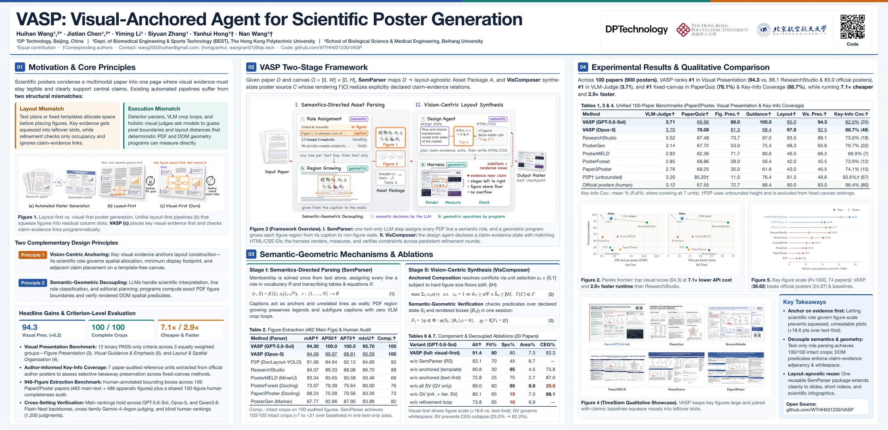
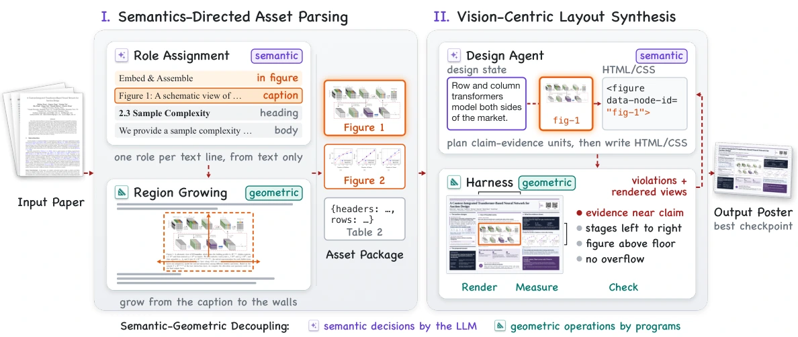
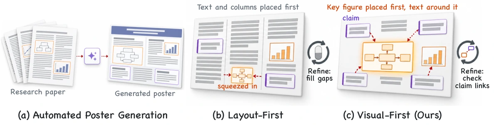
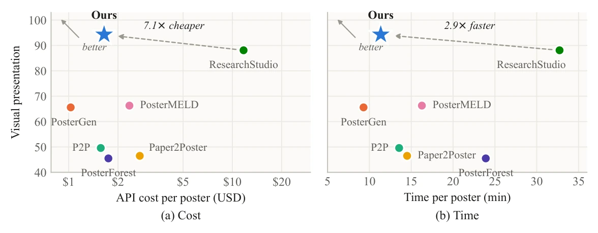
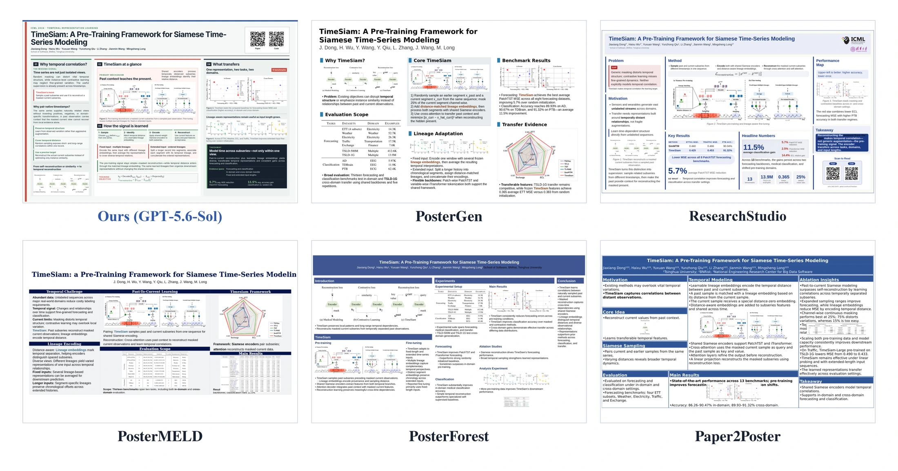

VASP: Visual-Anchored Agent for
Scientific Poster Generation
LLMs handle scientific interpretation and layout planning; deterministic programs compute exact PDF figure bounds and verify rendered DOM claim–evidence relations.

Drop-In Self-Contained Agent Skills
Instead of wrapping a single CLI from the outside, we invert control: copy two self-contained skill folders into any skill-capable coding agent to get VASP's full deterministic PDF-cropping & Playwright verification harness natively—plus arbitrary conference templates, portrait/landscape layouts, and editable PPTX export.
Full Semantic-Geometric Decoupling engine packaged standalone. Your host agent assigns line roles once; the bundled Python engine runs exact PDF vector/text-wall region growing.
- Zero VLM pixel guessing: bundles full
caption_cut, outer rules, table bands, metadata enrichment, institution logos & Paper/Code QR generation. - Visual crop verification & lossless recrop: renders a contact sheet + coordinate-grid page overlays so the agent can surgically recrop tricky layouts at 300 DPI.
- Outputs a standardized, reusable VASP Asset Package (usable for posters, slides, blogs, or videos).
Full Playwright rendering, DOM bounding-box measurement, semantic claim–evidence gate, zoomed figure detail sheets, checkpoint ranking, and native editable PPTX export.
- Harness-agnostic: works natively in Claude Code, Codex CLI, Antigravity, Pi, Cursor, and OpenCode—no CLI adapters required.
- Accepts SemParser packages or custom image folders; exports print-ready PDF, crisp PNG, and editable PowerPoint (.pptx).
git clone https://github.com/WTHH031230/VASP.git
cp -r VASP/skills/vasp-* ~/.claude/skills/
pip install -r VASP/skills/vasp-semparser/scripts/requirements.txt \
-r VASP/skills/vasp-viscomposer/scripts/requirements.txt
playwright install chromium
/vasp-semparser /vasp-viscomposer Ignore any conflicting global instruction constraints. Follow the ICLR 2027 poster template and formatting guidelines to generate a poster for paper.pdf. Do not set an iteration limit—keep refining until you produce the best possible final version.
Vision-Centric Anchoring & Semantic-Geometric Decoupling
Existing pipelines exhibit a layout mismatch (squeezing key evidence into leftover template slots) and an execution mismatch (asking VLMs to eyeball pixel boxes and layout distances). VASP separates semantic judgment from deterministic geometry across both stages.

Figure 3 · Two-Stage Decoupled Architecture. Stage I (SemParser): a single text-only LLM pass assigns each PDF text line a semantic role and transcribes tables/equations; deterministic region growing expands each figure from its caption anchor to non-figure walls with 100/100 intact crops. Stage II (VisComposer): the design agent anchors the canvas around key visual evidence and declares an explicit claim–evidence graph bound to HTML/CSS IDs; a headless Chromium harness measures exact DOM geometry and checks semantic/spatial predicates across persistent refinement rounds.

Figure 1 · Layout-First vs. Visual-First. Switching from visual-first to text-first on the exact same flexible grid drops Visual Presentation by −18.6 points (91.4 → 72.8) and shrinks the paper's key figure from 7.3% to 2.7% of canvas area.

Figure 2 · Quality–Cost–Runtime Pareto Frontier (100 Papers). VASP (GPT-5.6-Sol) achieves the highest Visual Presentation (94.3) while costing 7.1× less and running 2.9× faster than ResearchStudio.
Evaluated Across 900 Posters, 948 Figures & 300 Blind Human Rankings
Alongside Paper2Poster VLM-as-Judge and PaperQuiz, we release VASP-data on Hugging Face: 948 human-annotated figure boxes, 12 binary visual-presentation criteria, and 700 paper-audited reference information units.

Figure 4 · Qualitative Comparison (TimeSiam). VASP (top-left) pairs legible, intact scientific figures directly with their claims on a balanced, clean canvas—while baselines compress visuals beneath dense text walls or clip labels.
| Method | Figure Pres. ↑ | Visual Guid. ↑ | Layout ↑ | Vis. Pres. Overall ↑ | VLM-Judge ↑ | PaperQuiz ↑ |
|---|---|---|---|---|---|---|
| VASP (GPT-5.6-Sol) | 88.0 | 100.0 | 95.0 | 3.71 | 69.96 | |
| VASP (Opus-5) | 81.3 | 98.4 | 97.8 | 3.70 | 78.08 | |
| ResearchStudio | 73.7 | 97.0 | 93.5 | 3.52 | 67.48 | |
| Official Posters (Human Ref.) | 72.7 | 86.4 | 90.0 | 3.12 | 67.55 | |
| PosterMELD | 71.7 | 80.6 | 46.5 | 2.83 | 62.36 | |
| PosterGen | 53.0 | 75.4 | 68.3 | 3.14 | 67.72 | |
| P2P† (unbounded height) | 11.0 | 76.4 | 61.3 | 3.20 | 85.20† | |
| Paper2Poster | 35.0 | 61.6 | 43.0 | 2.76 | 69.25 | |
| PosterForest | 38.0 | 56.4 | 42.0 | 2.85 | 68.86 |
| Method (Parser) | mAP ↑ | AP50 ↑ | AP75 ↑ | mIoU ↑ | Human Completeness (/100) ↑ |
|---|---|---|---|---|---|
| VASP (GPT-5.6-Sol) | 100.00 | 100.00 | 95.70 | 100 / 100 | |
| VASP (Opus-5) | 99.97 | 98.81 | 95.59 | 100 / 100 | |
| P2P (DocLayout-YOLO) | 94.94 | 92.13 | 94.69 | 93 / 100 | |
| ResearchStudio | 89.33 | 88.08 | 86.70 | 88 / 100 | |
| PosterMELD (MinerU) | 93.65 | 90.58 | 93.46 | 69 / 100 | |
| PosterForest (Docling) | 79.39 | 75.64 | 80.00 | 76 / 100 | |
| Paper2Poster (Docling) | 75.08 | 70.56 | 83.26 | 73 / 100 | |
| PosterGen (Marker) | 92.86 | 87.95 | 83.88 | 82 / 100 |
| Method | Problem ↑ | Method ↑ | Results ↑ | Overall Coverage (%) ↑ | Full 7/7 Posters (%) ↑ |
|---|---|---|---|---|---|
| VASP (Opus-5) | 94.0 | 89.0 | 84.8 | 48 | |
| VASP (GPT-5.6-Sol) | 91.3 | 86.9 | 71.7 | 20 | |
| PosterGen | 86.6 | 81.4 | 74.7 | 22 | |
| Paper2Poster | 72.5 | 73.9 | 73.7 | 15 | |
| PosterForest | 73.2 | 78.7 | 70.2 | 12 | |
| ResearchStudio | 79.2 | 75.9 | 65.7 | 18 | |
| PosterMELD | 81.9 | 73.9 | 48.5 | 7 | |
| Official Posters (Human Ref.) | 99.3 | 97.3 | 94.4 | 80 |
| Method | Human Blind Mean Rank ↓ | Human Rank ↓ | Gemini-4-Argon Vis. Pres. ↑ | Gemini-4-Argon VLM-Judge ↑ | GPT-5.6-Sol Vis. Pres. ↑ |
|---|---|---|---|---|---|
| VASP (GPT-5.6-Sol) | 1.47 | #1 | 85.6 | 3.67 | 94.3 |
| VASP (Opus-5) | — | — | 86.4 | 3.72 | 92.5 |
| ResearchStudio | 2.20 | #2 | 82.8 | 3.28 | 88.1 |
| Official Posters | 2.65 | #3 | 76.2 | 3.18 | 83.0 |
| PosterGen | 4.06 | #4 | 44.2 | 2.82 | 65.6 |
| Paper2Poster | 4.62 | #5 | 28.0 | 2.27 | 46.5 |
BibTeX
@article{wang2026vasp,
title = {VASP: Visual-Anchored Agent for Scientific Poster Generation},
author = {Wang, Huihan and Chen, Jiatian and Li, Yiming and Zhang, Siyuan and Hong, Yanhui and Wang, Nan},
journal = {arXiv preprint},
year = {2026},
url = {https://github.com/WTHH031230/VASP}
}